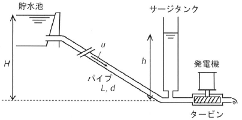

令和元年度 問33 化学プロセス
貯水池から長さL＝1,000 m、管内径d=1.0 mのパイプを通して水を流し、水力発電機へ供給している。系の圧力変動を吸収するため下図のようにサージタンクが設けられている。基準高さからの貯水池水面高さはH＝50 mである。サージタンク水面はh［m］の高さにあった。パイプ内の平均流速u＝3.0 ms-1のとき、hとして、次のうち、最も近い値はどれか。ただし水の密度ρ＝1,000 kg m-3、管摩擦係数f＝0.0032、重力加速度g＝9.8 m s-2。管内流れの圧力損失はΔP=-2fLu2ρ/d［Pa＝kg m-1 s-2］である。

まず貯水池の水からかかる位置エネルギーを求めます。ρgh（ρ：密度［kg/m3］、g：重力加速度［m/s2］、z：高さ［m］）で［Pa］単位の位置エネルギーが計算できます。位置エネルギーは1000×9.8×50＝4.9×105 Paとなります。
（単位変換参考）
ρgh：kg/m3×m/s2×m＝kg / (m・s2)
Pa＝N/m2＝ (kg×m/s2) / m2＝kg / (m・s2)
配管内を流体が流れる時、摩擦によるエネルギー損失が発生します。その時のエネルギー損失量を圧力で表した圧力損失を計算します。計算式は問題に記載されているΔP=-2fLu2ρ/d［Pa＝kg m-1 s-2］を用います。圧力損失は2×0.0032×1,000×3.02×1,000/1.0＝5.76×104 Pa（0.576×105 Pa）となります。
サージタンクに液が流れ着いたとき、圧力損失により減少した4.9×105-0.576×105＝4.324×105 Paのエネルギーが発生しています。この時のエネルギーを位置エネルギーの式から高さに換算すると、4.324×105 Pa÷1,000 kg m-3÷9.8 m/s2＝44.12 mです。よって最も近い値は45 mです。